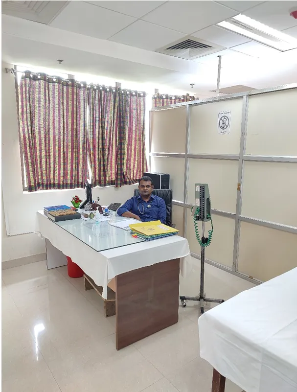

Consultation room
A dedicated consultation space supports assessment and primary medical treatment.
Primary-level health care for CUSB students, faculty, and staff, supported by the on-campus medical team.

The CUSB Health Centre is presently located inside Chanakya Bhavan. It provides primary-level treatment for general ailments to faculty, staff, and students under the supervision of Medical Officers.
The Health Centre operates round the clock, 365 days a year. A permanent Health Centre building is under construction according to the University's published information.
The campus Health Centre combines clinical consultation with separate care spaces and support staff for day-to-day primary health needs.
A dedicated consultation space supports assessment and primary medical treatment.
Separate male and female wards provide distinct patient-care spaces at the Health Centre.
A dressing room supports basic wound-care and related primary treatment needs.
The published staffing arrangement includes a nurse, pharmacist, dresser, and ambulance driver support.
The team shown below follows the current roster published by the University. Contact information is kept within the local support route rather than linking to the original site.
Medical Officer
MBBSMedical Officer
MBBSNurse
GNMMedical Attendant / Dresser
CMD, GraduateThe Medical Cell manages hospital empanelment under CUSBCHS and receives and processes medical bills for teaching and non-teaching staff. Medical reimbursement and claim documents are handled through the applicable University process.
Health Centre updates published in this local site will appear here.
Use the local enquiry route to ask about Health Centre services, administrative medical support, or medical documents.